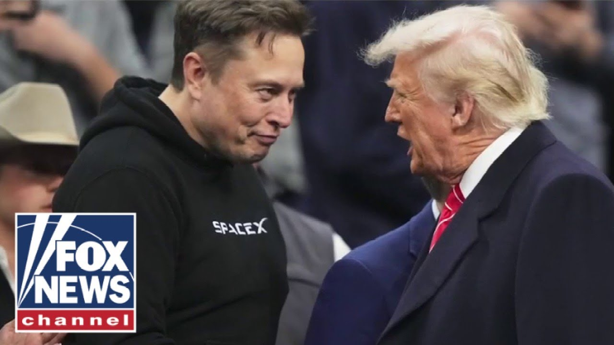

【特朗普称马斯克在DOGE退出前“将永远与我们同在”】
Summary: 马斯克结束DOGE负责人任期后离职。特朗普总统成立该部门以削减浪费、欺诈和滥用行为，据称已节省1750亿美元。白宫表示马斯克无需替代，因DOGE已带来文化变革。马斯克对总统法案表示担忧，白宫本周将向国会提交94亿美元削减方案。各方对DOGE成效褒贬不一，民主党批评其破坏性，共和党肯定其效率改革。
摘要： 马斯克结束DOGE负责人任期后离职。特朗普总统成立该部门以削减浪费、欺诈和滥用行为，据称已节省1750亿美元。白宫表示马斯克无需替代，因DOGE已带来文化变革。马斯克对总统法案表示担忧，白宫本周将向国会提交94亿美元削减方案。各方对DOGE成效褒贬不一，民主党批评其破坏性，共和党肯定其效率改革。

⏱️ Estimated Reading Time: 16 min
Musk is leaving after his whirlwind tenure as the head of Doge.
马斯克在担任DOGE负责人旋风般的任期后即将离职。
President Trump created the department to slash waste, fraud, and abuse.
特朗普总统成立该部门以削减浪费、欺诈和滥用行为。
The department says it saved $175 billion so far.
该部门称目前已节省1750亿美元。
So, Alexander Huff uh picks up the story leading our coverage there from the White House.
亚历山大·赫夫从白宫为我们跟进报道此事。
The job is not done.
这项工作尚未完成。
Alice, good morning to you.
爱丽丝，早上好。
Well, good morning to you.
早上好。
Yeah, the estimates is that uh through this effort that individual taxpayers have saved about $1,087 and really those dollar signs count there.
据估计，通过此努力，每位纳税人节省约1087美元，这些数字意义重大。
That's been Doge's um kind of leading message from the start.
这始终是DOGE的核心主张。
And the president, he expressed gratitude announcing the surprise press conference today that includes Elon Musk.
总统在今日突发记者会上表达感谢，马斯克亦出席。
He wrote, quote, "This will be his last day, but not really because he will always be with us helping all the way.
他写道："今日虽是他最后一天，实则他将永远与我们同行。
Elon is terrific."
埃隆非常出色。"
So, as of today, Musk has reached the limit for the time allowed to serve as a special government employee.
马斯克作为政府特别雇员的任期今日已达上限。
That's 130 days per calendar year.
即每年130天。
But the White House says Musk needs no replacement given the cultural change Doge has been able to imprint.
但白宫称DOGE带来的文化变革使马斯克无需接替者。
Doge is not going to end with Elon.
DOGE不会随马斯克离开而终结。
You know, it it is a way of thinking about cutting cost and it's also a way of thinking about making the government more productive and more efficient.
这是一种削减成本的思维方式，也是提升政府效能的理念。
As Musk has expressed gratitude for the temporary job, he's received a slew of thanks in return this week.
马斯克对此临时职位表达感谢，本周亦收获众多致谢。
SBA administrator Kelly Laughler wrote, "Of all things Elon Musk could create, he chose a more efficient, accountable government, and it will be one of his most important innovations ever."
小企业管理局局长凯利·劳勒写道："在马斯克所有可能创造的事物中，他选择了打造高效负责的政府，这将成为他最重要的创新之一。"
Now, despite Democrats using Musk's smash the system, chainsaw hand style of reduction as a rallying cry, DOA's fundamental fiscal goal was hard to argue with.
尽管民主党将马斯克"粉碎体制"的激进削减方式作为抨击焦点，但DOA的基本财政目标难以反驳。
Weeding out fraud, increasing transparency, and tackling redundancy among the government.
即根除欺诈、提高透明度、解决政府冗余。
This week, Musk did voice some concern over the president's big, beautiful bill, saying that in its initial form, it undermined some of Doge's work.
本周马斯克对总统的"宏伟法案"表示担忧，称其初版削弱了DOGE的部分成果。
Now, the White House is preparing to send over a $9.4 billion cuts package in the essence of Doge to Congress this week.
白宫本周将向国会提交体现DOGE精神的94亿美元削减方案。
We'll send it back to Okay, Alex, thanks.
交还给你了，亚历克斯，谢谢。
Nice to see you at the White House.
很高兴在白宫见到你。
Harold Ford Jr. here and Noah Rothman.
小哈罗德·福特与诺亚·罗斯曼在此。
Harold did not sleep last night because he was at the ball game.
哈罗德昨晚因观赛未眠。
More on that later.
详情稍后报道。
Uh, hot takes from both of you.
请二位发表见解。
First, what do you think about Doge so far? or what have they accomplished?
首先，你们如何看待DOGE迄今的成效？
I think the promise of Doge was u significant at the outset and it still has promise but that promise is unrealized.
我认为DOGE初期承诺重大，潜力仍在但未充分实现。
Um 175 billion is far short of what Elon Elon Musk was promising.
1750亿远低于马斯克承诺的数额。
He said a trillion in that interview.
他在采访中提及一万亿。
He's previously said two trillion which is a lot considering that the non-defense non-discretionary budget is $1.7 trillion.
他此前甚至说过两万亿——考虑到非国防非自由支配预算仅1.7万亿，这数字很夸张。
I mean, you'd have to really reach into entitlements if you wanted to make meaningful cuts.
要实质性削减必须触及福利支出。
175 billion and this recision package that they're sending to Congress is really not a ton.
1750亿和提交国会的撤销方案并不算多。
And what's in that recision package, it's primarily Republican ideological stuff, stuff I like, stuff I want to see.
该方案内容主要是共和党意识形态项目——虽是我乐见的。
The defunding PBS, defunding NPR, no more transgender ventriloquism shows in Los I don't even know.
包括撤销公共广播资助、取消变性腹语表演等（具体不明）。
But whatever it is, it is not going to amount to significant savings.
但无论如何都不会带来显著节省。
It is going to amount to reorientation of the government towards what it should be doing and toward away from what it not should not be doing.
其意义在于扭转政府职能方向。
That's good.
这很好。
That's important.
这很重要。
But it's not meaningful spending cuts and we shouldn't pretend like it is.
但并非实质性支出削减，我们不应混淆。
Harold Ford Jr. I think that another thing though that on the positive side is that one one thing we we don't hear a lot.
小哈罗德·福特：积极的一面是我们较少提及的一点——
Maybe we'll hear about it at 1:30.
或许1:30发布会会涉及。
What can Elon Musk and his team do to try to improve technology at some of these places and in government?
马斯克团队如何提升政府机构技术水平？
Are there ways to improve the systems so that we all benefit and that the workers benefit from having something a little bit more modernized?
能否通过系统现代化让全民及公务人员受益？
Without question.
毫无疑问可以。
Thanks for having me on.
感谢邀请。
I I agree sentimentally and directly with everything Noah said.
我完全赞同诺亚的观点。
This was a good effort.
这是良好尝试。
It was a good um you put the richest man in the world in charge of this and you put a lot of optics around it.
让世界首富主导并营造声势是明智之举。
If I were them, I'd follow up in two ways.
若是我会采取两项跟进措施：
One, I'd go ask Mitch Daniels to come in and take the next six months and try to build on some of these things that these guys have in terms of the building on it.
一是邀请米奇·丹尼尔斯用半年时间深化现有成果；
country is ready to to create some of these savings.
国家已准备好实现部分节省。
Two, I'd ask every my cabinet heads to give me a budget for this year with five to seven% less uh based on some of the recommendations though just made to them.
二是要求内阁按建议提交削减5%-7%的年度预算。
The reality is as as Noah said and we talked a little bit about beforehand, it's unclear to me if these savings are going to be realized or these dollars will be put back into people's pockets either through tax.
如诺亚所言，这些节省能否实现或通过退税返还民众尚不明确。
At one point they talked about tax refunds for every American.
他们曾提及全民退税。
We talked about $1,000 savings.
讨论过人均1000美元节省。
I'm not, it's unclear to me if we see that because of the way government works and the way these contracts are canceled and the way they have to continue to be paid out, but I give him credit.
鉴于政府运作方式，能否实现存疑，但仍值得肯定。
Business people going into government's a good thing.
商界人士参政是好事。
I hope people will continue to do it.
希望持续推动。
But I hope if the president's serious, put a group of serious-minded people who understand government in charge of something.
但若总统认真，应任命懂政府的务实团队。
And I would put Mitch Daniels right at the top.
我会首选米奇·丹尼尔斯。
Okay.
好的。
Very interesting.
很有意思。
Uh, so Musk is leaving.
马斯克即将离职。
He could come back in a year.
一年后或可回归。
By the way, the rules establish that you can only work a certain certain number of days per 365 days, but you could had to comply with correct on that.
按规定365天内仅可任职特定天数，需严格遵守。
Um, but the Doge team is staying on and we'll see what they do after that.
但DOGE团队留任，后续行动值得关注。
We'll see whether or not they show up at this press conference today, too.
今日记者会是否出席亦待观察。
It would be interesting hearing from the others as to what they would do next.
听取其他成员下一步计划会很有趣。
Okay.
好的。
Um, Byron Donald's first, then Jasmine Crockett next.
先请拜伦·唐纳德，再请贾斯敏·克罗克特发言。
Here's uh Byron Donald's on his view of it.
拜伦·唐纳德看法如下：
I think the Doge folks led by Elon Musk have done a phenomenal job.
我认为马斯克领导的DOGE团队成就非凡。
They came in on on a mission and that was to get waste and and terrible spending out of the federal government.
他们肩负消除联邦政府浪费支出的使命而来。
We need to be following the lead of Doge on this.
我们应追随DOGE的领导。
Let's go and look at everything that they've listed and when we go through annual appropriations, which going to happen over this summer, let's make sure we don't reauthorize that money going forward.
今夏年度拨款时，务必不再批准其列出的冗余项目。
Okay, so we'll watch that, too.
我们会密切关注。
Jasmine Crockett is not happy about this at all.
贾斯敏·克罗克特对此强烈不满：
Elon came to Washington thinking he could run the government like one of his companies, firing people left and right, gutting essential services, and tearing this blank up, from the ground up.
马斯克以为能像经营企业般管理政府，大肆裁员、削减基础服务、彻底破坏体系。
Uh, what he did is the definition of waste, fraud, and abuse.
其行为正是浪费、欺诈与滥用的典型。
It's time for a full investigation into the damage he's caused in the for the truth to come to light.
现在需全面调查其造成的损害，揭露真相。
Expected what?
意料之中吗？
Anything that Jasmine Crockett just said?
对克罗克特所言有何预期？
No, I don't I don't anticipate that'll happen.
不认为会实现。
Um, listen, but Herald's idea is really, really sharp.
但哈罗德的建议非常犀利。
At the outset of Doge, even before the inauguration, you had a lot of Democrats who were supplicating before the Trump movement and doing Doge, using Doge for that process.
DOGE初期甚至就职前，许多民主党人曾向特朗普运动示好，利用DOGE推进议程。
Um, Gothimer, Josh Gothimer, Richie Torres, variety of others, Roana, some iconoclastic Democrats are saying, "Listen, this is where the country is moving and we got to get with it."
乔什·戈特海默、里奇·托雷斯等反传统民主党人曾称"这是国家趋势，我们必须顺应"。
And then Elon Musk's personality got in the way and it was the only traction Democrats could get with the public because they couldn't really argue against Donald Trump.
后因马斯克个性问题，这成为民主党唯一能争取公众的抓手——他们无法直接反驳特朗普。
He was still quite popular.
当时特朗普仍颇受欢迎。
Elon Musk popularity fell through a floor and all you heard was do President Musk Elon Musk controls this government.
马斯克声望暴跌后，民主党不断强调"马斯克控制政府"。
It was the Democratic talking point.
这成为其话术核心。
With him out of the way, with a more serious cost cutting efficiency expert like Mitch Daniel, somebody who understands how government works and won't be surprised when he encounters civil service protections, for example.
若由米奇·丹尼尔斯等真正懂政府运作的务实专家接手，效果或不同。
That's the sort of thing could really have an effective a way to present an effective blueprint for Congress to make recision cuts.
此类人才能为国会提供切实可行的削减蓝图。
and the model that do except for the problem is really it's not in the executive branch in terms of wanting to cut as Russell vote at OM he'll do that he works for President Trump it's the Congress Harold and you were part of that and you know how hard it is to get them to cut anything DP I didn't answer your question about technology from the outset I would also what I'd ask this guy Elon Mus to come back and do is to tell me how we make the NTSB and FEMA how do we make the air traffic controls and what is it that we can do is there are there modern technologies or things we're not doing right there to not only uh cost cut, but to actually make it safer and better for it to work.
关于技术问题，我还会请马斯克建议如何改进NTSB、FEMA及空管系统——通过现代技术既节省成本又提升安全效能。
But you're right, at the end of the day, this is a courage question for Congress.
但最终这取决于国会的勇气。
Uh and I think President Trump has to be a leader on this.
特朗普总统需发挥领导力。
Noah said it also at the outset, the biggest dollars are spent in the entitlements and defense spending.
如诺亚所言，最大开支在于福利与国防。
If you're serious about uh cutting the debt and serious about reforming uh government, you got to look at those programs as well.
若真想削减债务、改革政府，必须审视这些领域。
And perhaps we'll get somebody to do that.
或许未来有人能推动。
Mountain of granite to crack.
这如同劈开花岗岩般艰难。
And I think that's one of the big takeaways from Doge.
这正是DOGE的重要启示。
All right.
好的。
We may see these hearings that may call in former Biden officials if they show to talk about Biden's cognitive decline, who knew what, when, etc.
或将举行听证会传唤前拜登官员，追问其认知衰退的知情情况。
Uh Stephen A. Smith of all people on with Sean last night.
昨晚斯蒂芬·A·史密斯与肖恩对谈提及：
The culprits within the Democratic party who knew about the cognitive decline are far more uplo than you, myself or many, many other American citizens knew.
民主党内部知情者层级远高于普通民众的想象。
And they were not only complicit, but were willing to circumvent the Constitution of the United States.
他们不仅共谋，更意图绕过美国宪法。
They wanted to bypass elements of the democratic process in order to ensure that their guy was in office instead of Donald Trump.
为确保己方人选执政，他们不惜破坏民主程序。
So, to set this up for our viewers at home, Republicans in the Senate are planning a hearing.
为观众说明：参议院共和党人正筹备听证会。
Republicans in the House are planning a hearing.
众议院共和党人同样在准备。
I don't know who shows up at this hearing.
不确定哪些人会出席。
Um, do they get anywhere with this?
会取得进展吗？
Is it smart to be looking back at a time when you've got a new administration trying to go forward?
在新政府推进之际回顾往事是否明智？
Uh, politically, it's it's definitely smart for Republicans.
政治上对共和党绝对有利。
Uh, who shows up at this hearing?
谁会出席听证会？
The so-called pullet bureau as they were uh defined in in the in the Tapper Thompson book.
所谓"雏鹰集团"（塔珀-汤普森书中定义）成员——
um which includes some Biden adviserss, some Jill Biden advisers.
包括部分拜登及吉尔·拜登的顾问。
And I think this is good for it would be good for Democrats, too.
这对民主党也有益。
This would be very painful.
过程虽痛苦，
They would be subject to a lot of grandstanding.
需承受作秀式质询，
They would have to eat a lot of spinach that they've tried to avoid eating over the course of the last four years.
吞下过去四年逃避的苦